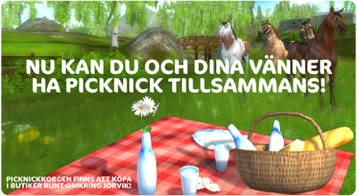
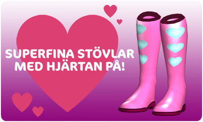

Szia!
Itt olvashatsz a hét frissítéseiről!
Új küldetés:
Jorvikban betakarítási időszak van, ideje segíteni Barneynek a mezőgazdasági munkákban!
Piknik:
Számos üzletben kaphatók már piknikkosarak, amelyeket te és barátaid használhattok a Jorvikon itt-ott található különleges piknikhelyeken.

Tárgy:
A Valentin-napi kabát még mindig kapható a Silverglade ruhaüzletben, a falu másik ruhaüzlete (Steve's Second Hand) pedig most aranyos szivecskés gumicsizmákat kínál!

Folytatjuk a munkát a jövőbeli, nagyobb terjeszkedések és funkciók fejlesztésén!
Üdvözlettel:
a Star Stable csapata